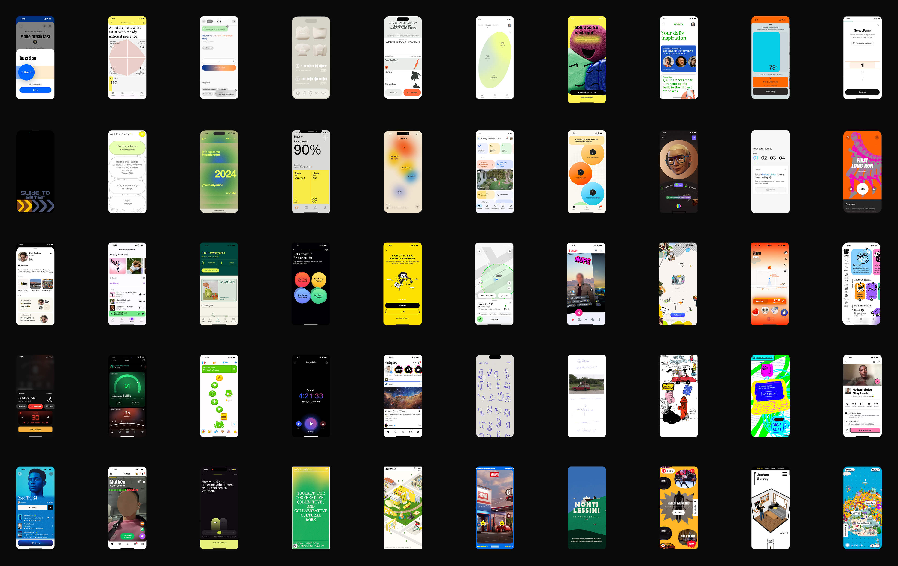
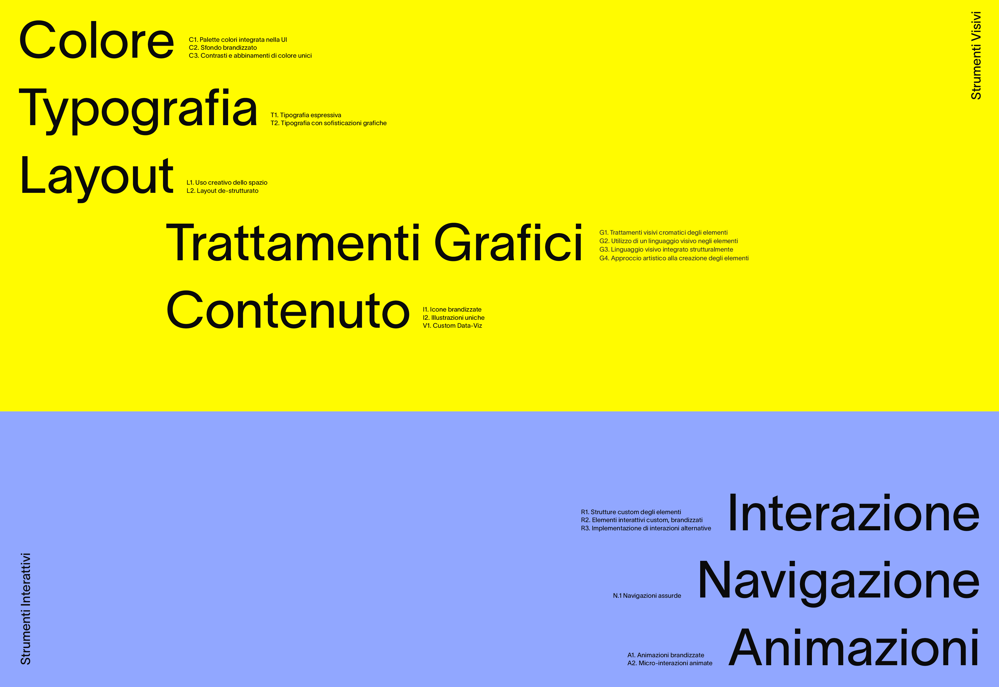

Communication Design Master's Thesis
Communicative Interfaces is the title of my research thesis developed as the final project of my Master's degree in Communication Design.
The thesis addresses the issue of a widespread lack of visual quality—and therefore expressive capacity—within the current landscape of interface design.
After analyzing the causes behind this phenomenon, the thesis invites the design community to consider the need for an independent discipline of interface design—one that values visual and expressive innovation as a fundamental part of the design process.
The core of the project consists of a curated collection of 50 expressive interface projects, showcasing the visual and communicative potential of digital screens.
The selected interfaces were further analyzed to identify the visual and interactive elements that define their unique digital personality. These recurring elements were grouped into macro-categories and examined in detail.


Multiple data visualizations were designed to highlight the lack of attention to visual aspects within the field of UX design.
To encourage real conversation on the topic, the research has also been translated into a digital platform, making both the theoretical content and the archive of interfaces accessible to interested designers.